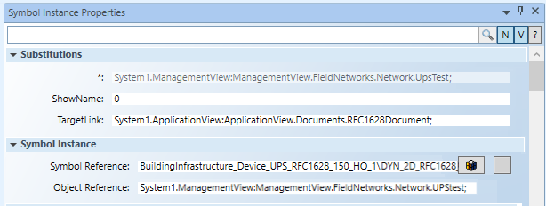
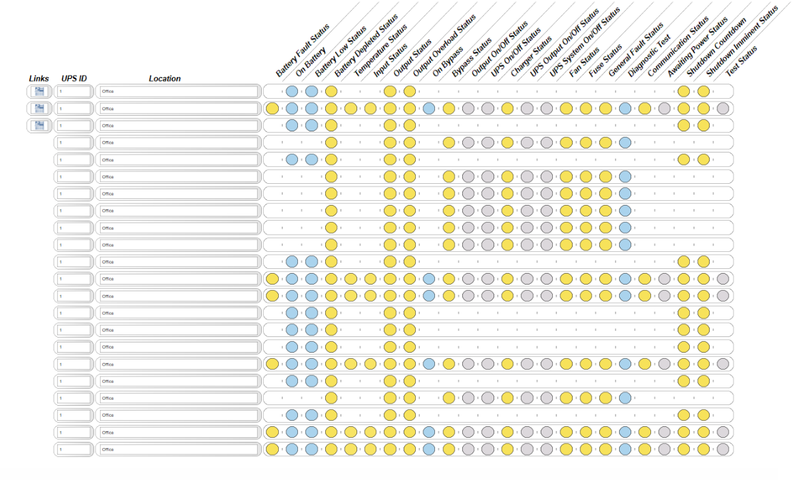

Configure the UPS Devices in the Graphic
The Element Tree view contains a symbol instance for each row of the sample graphic up to a maximum of 22. Configure all the UPS devices required for your graphic as follows:
- Expand Layer (Layer1).
- Select Symbol Instance (1).
- The Symbol Instance Properties view displays the substitutions and properties associated with that particular symbol instance.
- In System Browser navigate to Project > Field Networks > [RFC1628 network] > [UPS device].
- Drag the UPS device object onto the Object Reference field of the Symbol Instance (1) properties.
- (Optional) By default, in Symbol Instance Properties > Substitutions, the ShowName field is set to 0. This means that the description of the UPS properties will display on the symbol tooltip. To show the MIB name, enter 1.
- (Optional) In Symbol Instance Properties > Substitutions > TargetLink field, from System Browser drag and drop the UPS document node. When clicking on the related Link button in graphic, you will be able to navigate to the configured document node.

- Repeat the previous steps for all the remaining symbol instances.
